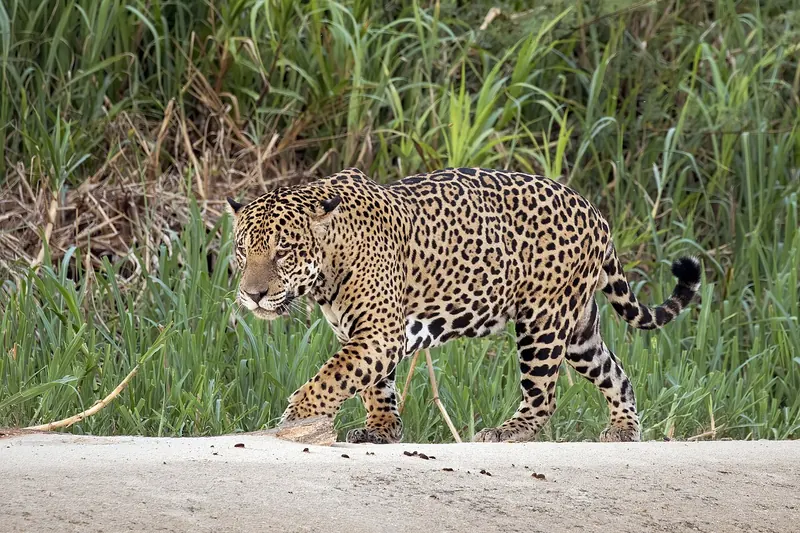

Állat
Jaguár
Panthera onca
Amerika legnagyobb macskaféléje, amely kiválóan úszik és mászik. Erős harapásával akár egy teknős páncélját is képes feltörni. Főleg a talajszinten vadászik, gyakran folyók közelében.
- Talajszint
- Közép- és Dél-Amerika